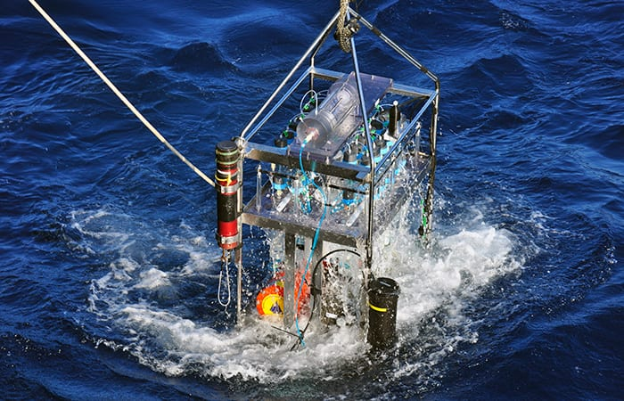

Intro
I am currently an electrical engineer at Woods Hole Oceanographic Institution. I graduated from Purdue University with a Bachelor of Science in electrical engineering technology. Some of my previous experience involves horticulture R&D, agriculture technology, industrial manufacturing, and most recently modeling and simulation experience in the defense industry. By the way, check out my awesome work.
Projects
Collections of projects available publicly

Designing the circuit and printed circuit board layout for a Christmas ornament
Technical Skills Used - Altium

Working script for generating a text file with very unique syntax in order to automate a microbial sampler Submersible Incubation Device (SID)
Technical Skills Used - Python
Notes that I've been taking to relearn some engineering principles
Work Experience
Lumasys
Research & Development Engineer
- Provide engineering solutions for a start-up specializing in high bandwidth, low power optical communications solutions for underwater applications
- Improve optical designs to increase the light detection of the photomultiplier tube and decrease backscatter
- Serve as product manager for two of three offered communications packages handling roughly $250,000 of annual sales
- Perform quality assurance as well as handle packaging and shipping for international deliveries
- Coordinate timelines to assure that products are assembled and verified properly to meet deadlines
- Orchestrate solutions and documentation for approximately 20 annual technical support inquiries
- Designed and assembled a high-density LED board for increasing underwater optical communications range
Woods Hole Oceanographic Institution
Electrical Engineer
- Develop optical communications solutions for autonomous underwater vehicles
- Serve as lead electrical designer for a UUV capable of AUV docking using AutoCAD Electrical for wiring harness design
- Assemble and test approximately 25 optical modem systems annually while detailing build and analysis procedures
- Oversee dock tests to verify communications link quality and range performance of optical modems in undersea setting
- Procure and research replacement components for ten simultaneous board assemblies facing supply chain issues
- Automated a PIC16 microcontroller program for long-term underwater deployment of a microbial sampler paying special attention to robustness and low-power usage
- Architected a PIC24 microcontroller algorithm to wake optical modem from extreme power saving mode
- Integrated CAN bus into ROS container for a UUV to communicate with thruster motor controllers
- Designed electrical circuit and PCB layout for high voltage power protection circuit board using Altium Designer
- Designed a wiring harness capable of 900W for integrating a laser transmitter module onto an underwater vehicle
Raytheon
Systems Engineer
- Programmed modeling and simulation algorithms using Java for a radar
- Modeled high fidelity jammer behavior by analyzing real-time data and implementing the results
- Received a technical innovation achievement award for introducing a new signal processing path to support future algorithm development efforts
- Oversaw the continued integration and interfacing of the simulator with a third-party combat management simulation
Purdue University Department of Horticulture
Research & Development Assistant
- Engineered plant cuvette technology to be used in controlled growth environments for the International Space Station
- Programmed a growth chamber management system using C# for measuring small plant photosynthesis
- Developed a system to control factors such as LED light intensity and levels of CO2 concentration in cuvette atmosphere
Arcelor-Mittal
Electrical Technology Intern
- Updated outdated hydraulic control of car hauler with PLC that allowed remote control to vastly reduce run time and cut operating expenses
- Investigated gas and pressure readings to determine downtime of blast furnace gas analyzers
- Developed new techniques for blast furnace operators to determine approximate liquid level of the furnace using electromotive force voltage measurements
- Planned an upgrade of molten iron transportation from hydraulic to DC motor control which saved an estimated $30,000 in annual power costs
- Practiced defined safety procedures including lockout-tagout and received specialized training
Education
Purdue University
Electrical Engineering Technology B.S.
Minor in Computer Information Technology
Technical Skills
Programming Languages
- Java
- Embedded C
- VHDL
- Python
- PLC Ladder Logic
Software and Version Control
- MATLAB
- Altium Designer
- AutoCAD Electrical
- MPLAB X
- Git
- TortoiseSVN
- Oracle VirtualBox
Hardware
- Oscilloscopes
- Soldering
- Function Generators
- Multimeters
- Wiring Harness Creation
- Electromechanical Assembly
- Optics Testing
Contact
michael.hilt4@gmail.com